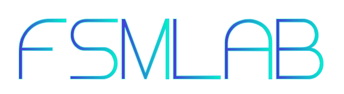
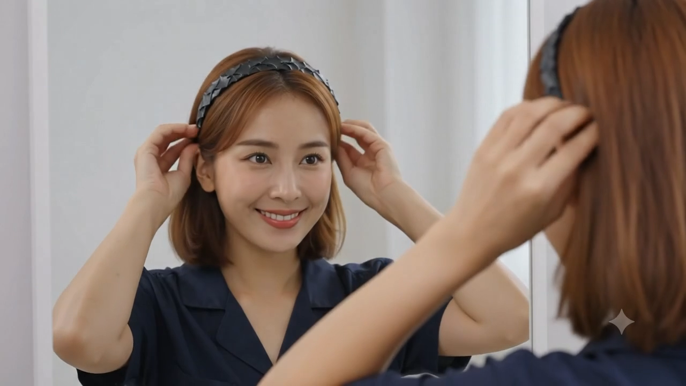
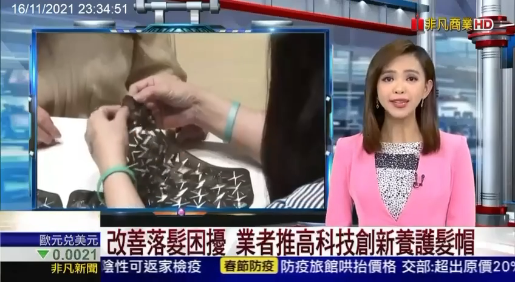
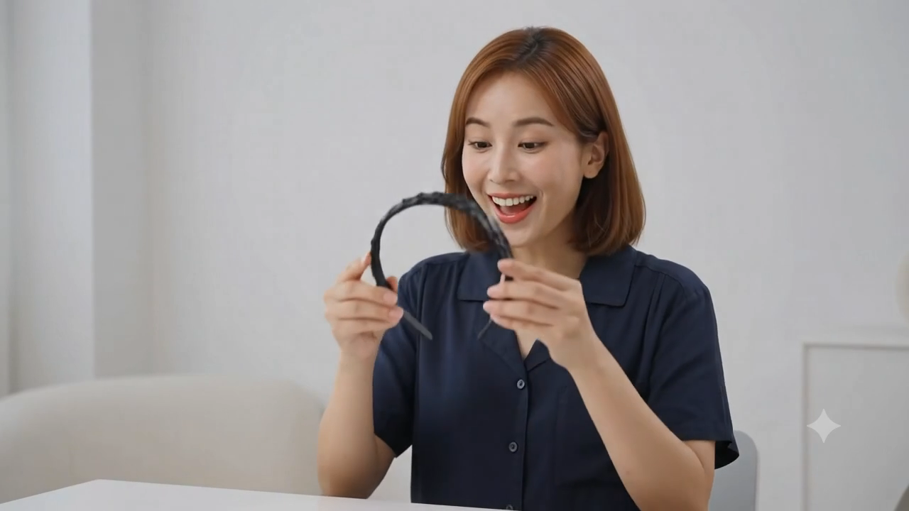
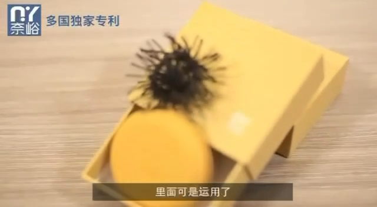
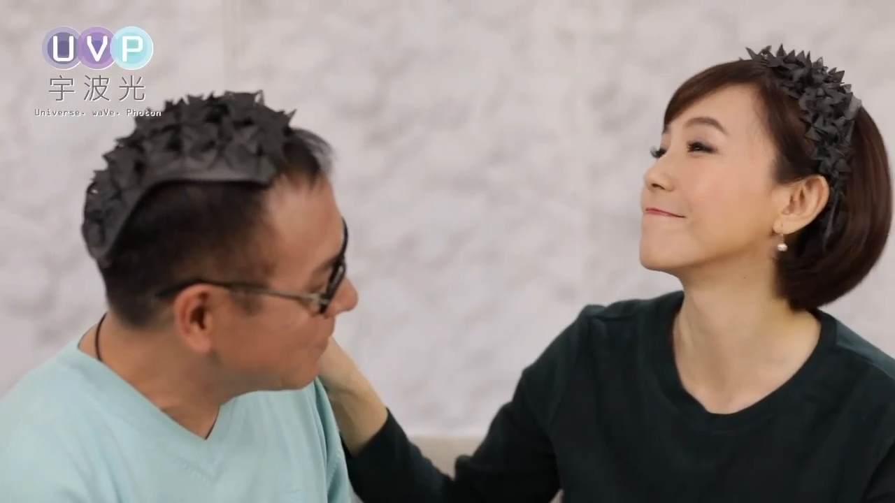
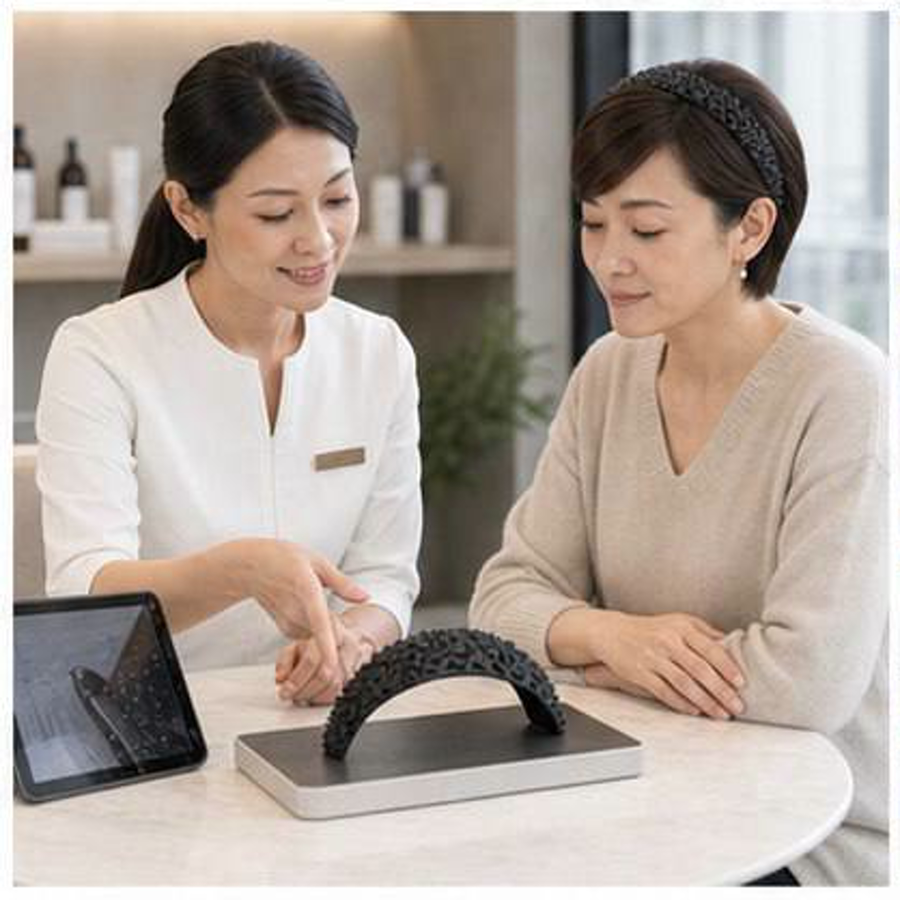
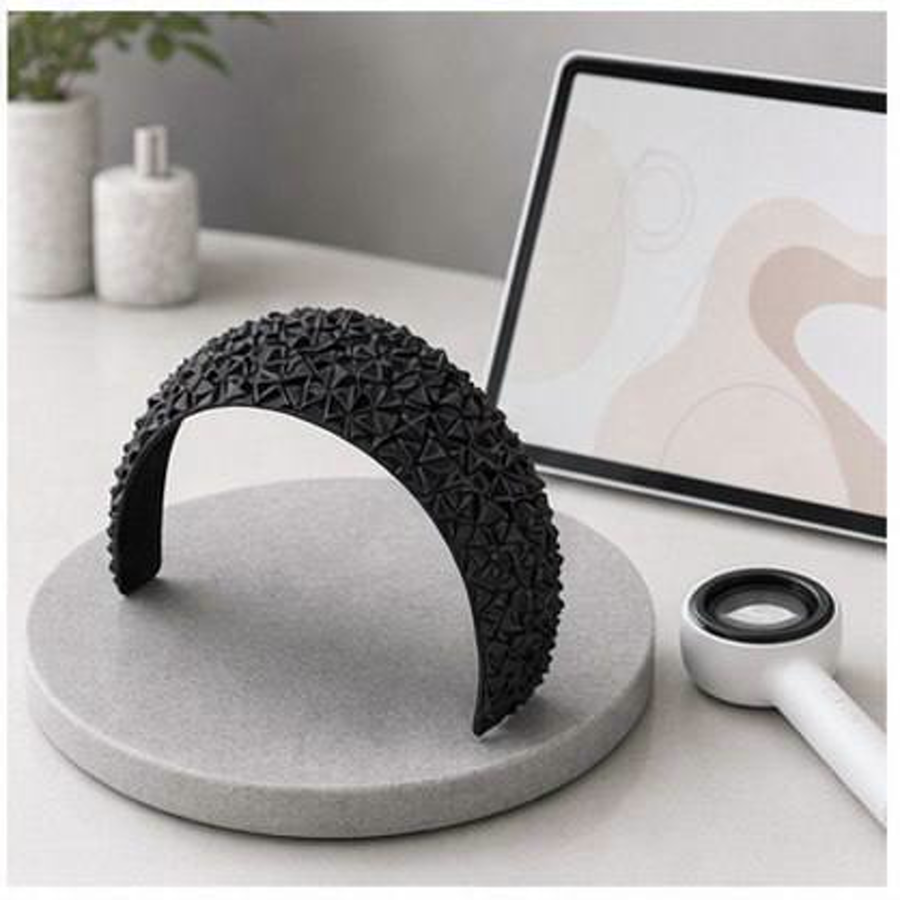
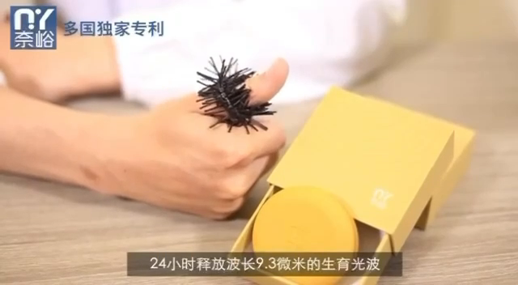
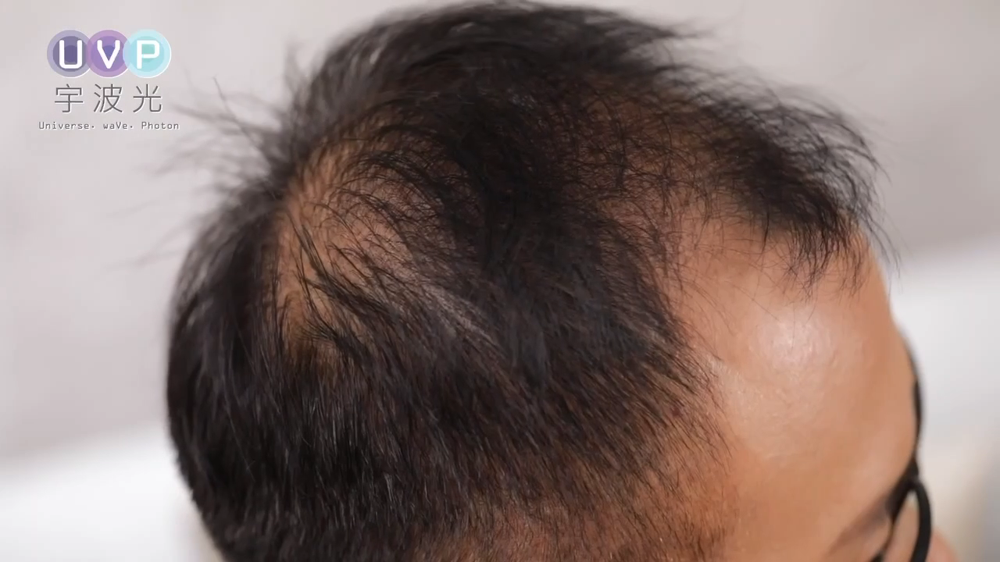

AI Growth Proposal · 2026
把科技美容、肌膚檢測、保養產品與門店服務，升級成可追蹤、可回訪、可複製的個人化肌膚管理系統。

01 / Public Signals
飛創美在台中臻愛花園飯店舉辦品牌發表會，公開宣傳「未來量子科技美容」與 MIT 保養品牌。
公開公司資料顯示聚佳元科技持續登記更新；店家資料列出新莊據點與美容保養、安瓶導入、美容課程。
官網主打創新科技養生肌膚管理、飛光速課程、日常居家保養、頭部/面部/痠痛調理。

影片截圖 01
影片截圖 02
單張素材02 / Position

03 / Industry Direction
AI 肌膚檢測、膚況標籤、客製課程與產品推薦，會成為美容品牌拉開差距的關鍵。
店內體驗、LINE 諮詢、課後回訪、居家產品續購，必須串成一條連續旅程。
科技美容不能只講概念，要有檢測報告、前後紀錄、客戶教育與合規文案。
產業越成熟，同質化越嚴重。AI 最有價值的地方，是讓品牌從「賣單次療程」變成「經營長期顧客資料與保養關係」。
04 / AI Opportunity Map
把照片、膚況、課程、產品建議變成漂亮報告。
預約前先問膚況、預算、時間與過敏史。
1/3/7/14/30 天提醒保養與回店。
依膚況推薦安瓶、居家保養與回購方案。
每週 FB/IG/Reels/Google 貼文自動排程。
避免醫療療效、誇大功效與敏感宣稱。
檢測話術、成交話術、FAQ 與考核題庫。
招商簡報、合作店導入包、成本收益試算。
05 / Customer Journey

06 / Report System

07 / LINE AI
LINE 不只是客服入口，而是會員經營入口。AI 要幫她把每個顧客變成可追蹤的保養檔案。
08 / Content Engine
3 篇 FB/IG 貼文、2 支 Reels 腳本、1 則 Google 商家貼文。
科技美容、膚況科普、產品保養、顧客情境、老師專業、活動宣傳。
所有健康、量子、改善效果相關文案，先經 AI 合規檢查再發布。


09 / Training & B2B
檢測流程、說明話術、禁忌提醒、成交話術、客訴回應、回訪節奏。
設備/課程/產品組合、店內流程、成本收益試算、首月導入表。
品牌故事、科技美容定位、導入案例、合作條件、店家收益模型。
10 / 90-Day Plan
官網課程/產品/價格/FAQ 統一，建立安全合規話術，整理 AI 科技美容簡報與 LINE 問答。
產出肌膚檢測報告、顧客分眾標籤、課後 7 天回訪、每週內容排程。
美容師訓練 SOP、合作店導入包、產品教育影片、HTML PPT 與數據儀表板。
優先順序：先讓 AI 幫她提高成交與回購，再做招商與代理。不要一開始就做很大的系統。
11 / Positioning Line
「用 AI 肌膚檢測與科技美容課程，幫顧客建立可追蹤的個人化保養方案；店內改善，居家延續，數據追蹤。」
AI 要落在檢測報告、回訪、推薦與內容，而不是只放在標語。
所有宣稱都用品牌主張與保養建議表述，避免療效保證。
把單次體驗改造成長期肌膚管理與產品續購。
12 / Talk Track
「Nina，妳現在最有價值的不是單一產品，而是科技美容、肌膚檢測、安瓶導入、門店服務和創辦人經驗。AI 可以幫妳把這些整理成可追蹤的會員系統，讓顧客從第一次檢測、第一次體驗，到回訪、回購、再介紹，都有完整流程。這會讓品牌更會成交，也更容易展店或招商。」
提醒：量子、健康調理、改善效果等用語，建議一律先做合規檢查，再放到官網或廣告素材。